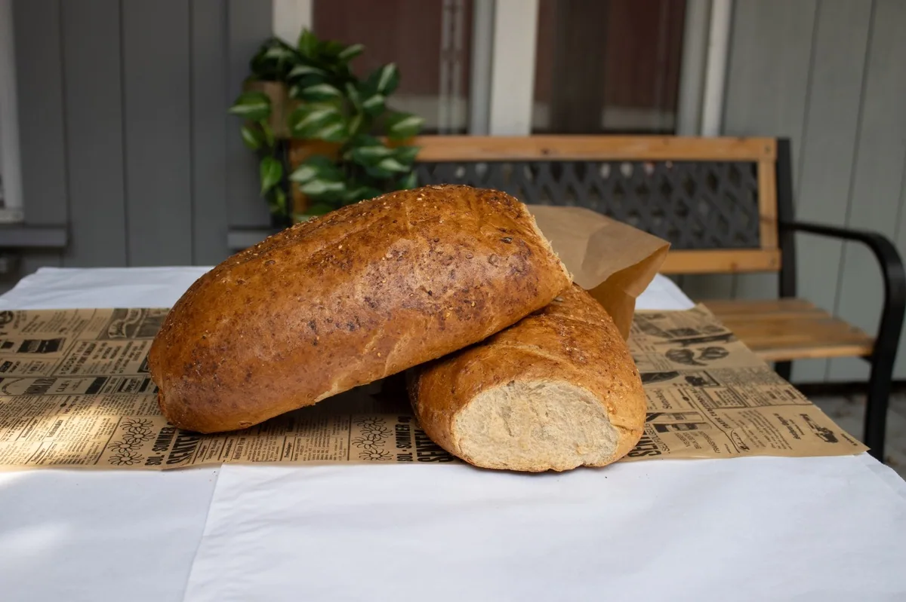
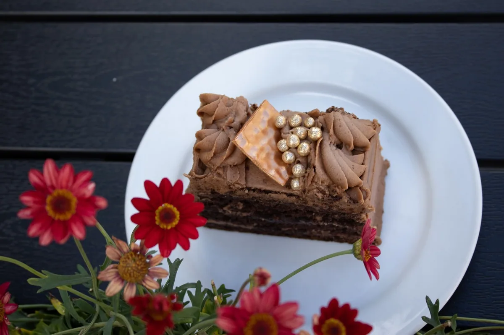
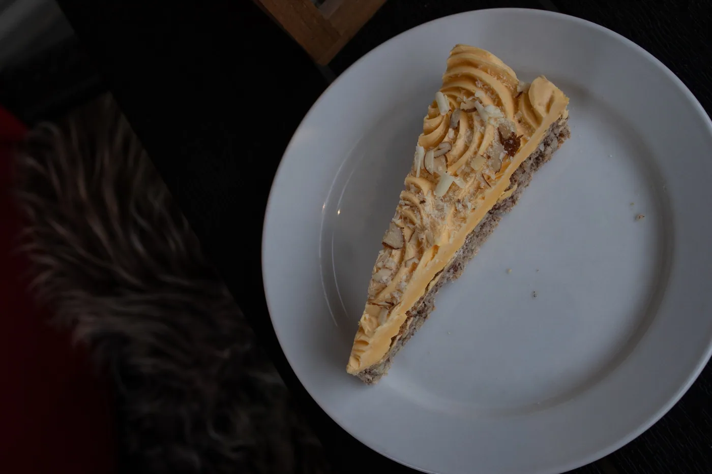
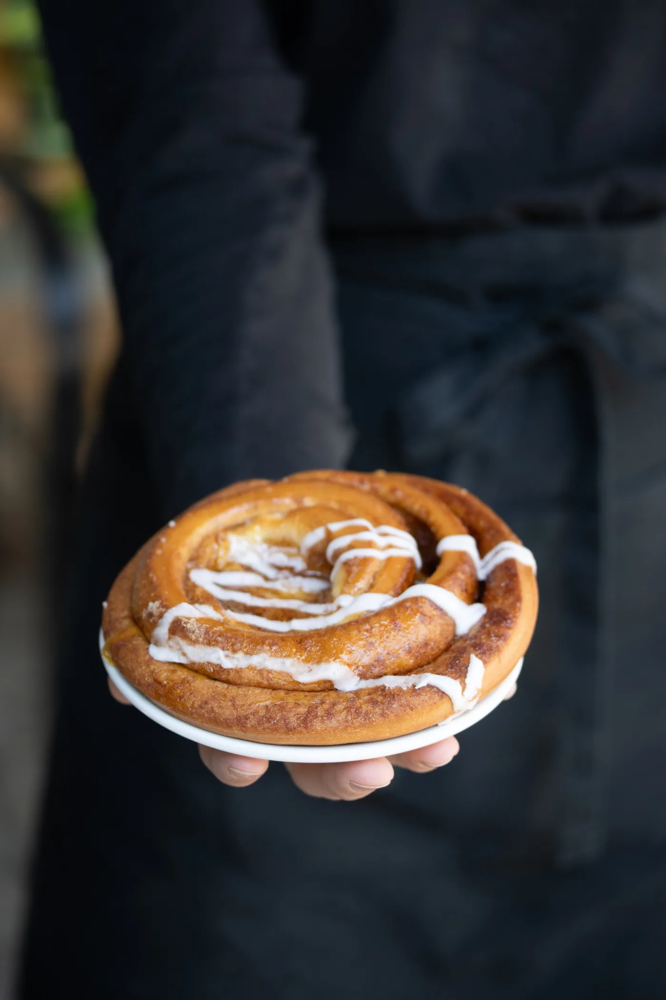

Selskapskaker
Vi hjelper deg med å skape akkurat det du ser for deg.
Granum Bakeri er Lillehammers familiedrevne bakeri og konditori – et lokalt møtested siden 1991. Mange av våre produkter er ikke bakt på linjer og bånd, men rett og slett for hånd.
Selskapskaker · lag for lag

Fra hverdagsbrød til selskapskaker – og en helt egen spesialitet.




Lillehammers og Granums egen spesialitet – en kake du kun finner hos oss.
Vi hjelper deg med å skape akkurat det du ser for deg.
Kaker til de spesielle anledningene, i den smaken du vil ha.
Bryllupskaker planlagt sammen med oss.
Påsmurte varer og bakervarer til møter og arrangementer.
Ring 61 26 38 10 eller send en henvendelse med anledning, antall og ønsket dato.